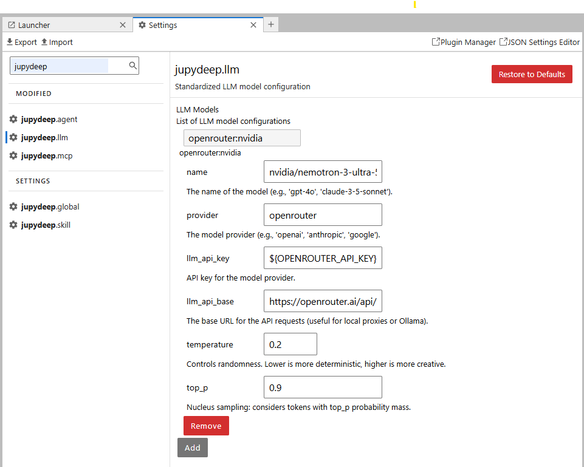

OpenRouter 配置
在这里，我们将以 OpenRouter 为例，介绍如何为 JupyDeep 配置 LLM 模型。OpenRouter 提供了丰富的 LLM 选择（包括许多免费模型），非常便于测试各种不同的模型。
我已附带了一个视频参考，以演示具体的设置细节。
本文档重点强调了您需要密切注意的关键步骤。
首先，请访问官方的 OpenRouter 网站注册一个账号。
注册并进入个人账户设置后，导航至 “Profile” 菜单并选择 “API Keys”。按照指引填写所需信息。
生成 API 密钥后，您需要将其配置为操作系统中的环境变量。
备注
对于 macOS 和 Windows 用户，请参考相关的在线文档来设置这些平台上的环境变量。
以 Ubuntu 为例，运行以下命令将变量追加到您的配置文件中：
$ echo "export OPENROUTER_API_KEY=<your_api_key>" >> ~/.bashrc
# Verify that the variable was added correctly
$ tail ~/.bashrc
$ source ~/.bashrc
现在我们可以创建一个专门的项目目录，以验证 JupyterLab 和 JupyDeep 的安装。
备注
在继续之前，请确保您的电脑上已安装了 uv 包管理器。
运行以下命令以初始化环境并安装所需的依赖项：
$ mkdir ~/jupydeep_demo
$ cd ~/jupydeep_demo
$ uv init
$ uv add jupyterlab jupydeep
$ uv run jupyter lab --ip=0.0.0.0 --no-browser
JupyterLab 成功启动后，复制终端中提供的 URL 并将其粘贴到浏览器的地址栏中。您应该能看到 JupyterLab 工作空间已打开，并显示有 JupyDeep 的图标。
您可能还会注意到目前没有可用的智能体，因为这是您第一次启动 JupyDeep。要开始使用，请导航至 “Settings Editor（设置编辑器）” 来配置我们的 LLM 设置。
如下图所示，使用我们先前配置的环境变量 ${OPENROUTER_API_KEY} 来填写 llm_api_key 字段。
The llm_api_base (the base URL) can also be obtained from the OpenRouter website. Please visit the OpenRouter Documentation page,
where you can find this information under the "Agent SDK" section. Fill in the llm_api_base field with the value of https://openrouter.ai/api/v1 .
{kind=link}

provider 字段应设置为 openrouter。至于模型名称，您可以浏览 OpenRouter Models 页面来寻找符合您需求的游戏。在本例中，我们将使用 NVIDIA 的免费模型：NVIDIA: Nemotron 3 Ultra (free)。只需从网页中复制模型字符串 nvidia/nemotron-3-ultra-550b-a55b:free 并将其粘贴到 name 字段中。
保存后，右下角弹出一个绿色通知，表明 LLM 已成功配置。“Agent Panel（智能体面板）” 将自动更新以应用更改，并显示出两个内置智能体。您现在可以为它们选择我们新配置的 LLM。JupyDeep 目前已完全就绪，可以开始对话了——尽情探索并享受它的功能吧！
JupyDeep 构建于 Pydantic AI 架构之上，原生支持众多 LLM 提供商。此处使用 OpenRouter 仅作为示例；对于其他平台，请查阅其特定文档，并密切注意 API_KEY 和 API_URL 的设置。
我们强烈建议阅读 Pydantic AI 文档，以深入了解模型集成的全貌。